This project was realised with the support of the Goethe-Institut through the Culture Moves Europe programme. In spring 2026, I travelled from Sweden to Vilnius for a research, performance, and workshop residency in collaboration with Studium P & Friends. Presenting my ongoing soundscape work based on field recordings from Swedish forests, I developed a series of activities including a live performance, a sound installation, and a field recording workshop. The project explored ecological listening and the sonic identity of natural environments, bringing these recordings into dialogue with the urban and acoustic landscape of Vilnius. Working closely with local artists and participants, the workshop focused on listening practices and field recording techniques, inviting participants to capture their own sound environments across the city. These encounters shaped new material and perspectives, expanding the project through shared listening and exchange. The residency created a space for connecting different geographies through sound, weaving together Nordic forest textures with the rhythms and atmospheres of Vilnius, and opening pathways for future collaborations and performances.